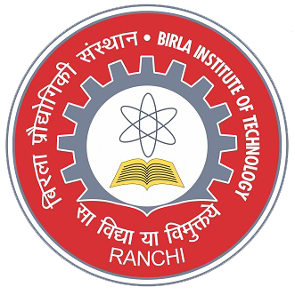
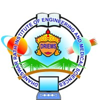

Programming & data science
- R
- Python
- Google Earth Engine JavaScript
- SQL
- Excel
- Machine learning
- Deep learning
- Physics guided learning
- Cloud native geospatial workflows
- Docker
- Agentic coding
- Vibe coding
Applied Scientist, Developer and Remote Sensing Practitioner
I build geospatial and remote sensing systems that connect field measurements, earth observation and physics guided AI.
I am a PhD candidate in Soil, Water, and Ecosystem Sciences at the University of Florida, working with Dr. Ebrahim Babaeian.
My doctoral research examines soil moisture, hydraulic soil properties and water fluxes at the field scale. I combine L band microwave radiometry, field measurements, radiative transfer modelling and machine learning to estimate moisture at different soil depths and understand how water moves through Florida’s sandy agricultural soils. I study the effective depth of microwave emission to improve estimates of moisture in the root zone. I also develop physics guided neural pedotransfer functions for soil water retention and hydraulic properties, alongside methods for downscaling and forecasting SMAP soil moisture.
Before joining UF, I worked as a Research Scientist at the National Remote Sensing Centre, Indian Space Research Organisation (ISRO). There, I worked on national land use and land cover mapping, automated mapping workflows, shifting cultivation and soil organic carbon estimation using PRISMA imaging spectroscopy. My earlier research at IIT Kharagpur explored mangrove species, leaf chlorophyll and carbon stocks using field inventories and AVIRIS NG imagery. At the Defence Terrain Research Laboratory, I developed spectral libraries and models of soil texture and worked on flood monitoring. These experiences continue to shape my interests in agriculture, vegetation dynamics, soil, water and environmental change.
Estimating soil moisture and hydraulic properties, understanding water fluxes, and connecting microwave observations with agricultural water management.
Using imaging spectroscopy and field measurements to study species composition, leaf chlorophyll, leaf area index, vegetation condition and mangrove carbon stocks.
Mapping land cover and shifting cultivation, estimating soil organic carbon and soil texture, and examining floods, surface water and wetland restoration.
I am interested in extending my geospatial research to methane and other greenhouse gas emissions across agricultural and wetland landscapes.
Agriculture, vegetation, soil, water
and greenhouse gas emissions.
Soil, Water, and Ecosystem Sciences
Thesis Remote sensing of soil moisture, hydraulic soil properties and water fluxes at the field scale.
Advisor · Dr. Ebrahim Babaeian
Remote Sensing
Thesis Impact of climate change on surface water bodies of Ganga River basin using a remote sensing approach.
Advisor · Dr. Virendra Singh Rathore
Civil Engineering
Project Morphometric analysis of Subarnarekha River using remote sensing and GIS techniques.
Advisor · Swapna AcharyaThe software, methods and instruments I work with.
I serve as Vice President of the SWES graduate student association and as a research coordinator in the Data Science and Informatics club at UF. I’m a member of ASPRS, SSSA and the AI² (AI Square) Center club.
I am also working with my advisor, Dr. Ebrahim Babaeian, to start a Remote Sensing & AI student club in SWES. The club will be a space to connect people, exchange methods and learn together.
Scroll to explore the places, questions and projects
that have shaped my work.
My work has taken me from surveying construction sites in Ranchi to studying soil, vegetation and water through field measurements and satellite observations.
Today, I work at the University of Florida. Scroll through the story to explore my current research and the roles that came before it.
University of Florida
Department of Soil, Water, and Ecosystem Sciences
Doctoral research with Dr. Ebrahim Babaeian on soil moisture, hydraulic soil properties and water fluxes at the field scale.
National Remote Sensing Centre
Indian Space Research Organisation
Independent projects
Independent geospatial analysis supporting ecosystem monitoring and restoration across Cameroon, Florida and the Ganga River basin.
Indian Institute of Technology Kharagpur
Centre for Oceans, Rivers, Atmosphere and Land Sciences
Defence Terrain Research Laboratory
Defence Research and Development Organisation
Bharat Drilling and Foundation Treatment
An early foundation in measurement, terrain and the practical relationship between land and engineering.
A calibrated τ–ω framework and an equilibrium-depth-scaling method that link surface brightness temperature to moisture deeper in the root zone, tested with a UAV L-band radiometer over potato fields at Citra, Florida.
Evaluating NISAR L-band GCOV and the L3 soil-moisture products against about 80 in-field probe locations at four depths, using a water-cloud and integral-equation modelling approach.
Neural networks that predict van Genuchten water-retention parameters and hydraulic conductivity from soil properties, with physical constraints and ensemble uncertainty — benchmarked against Rosetta on independent datasets.
Forecasting plant-available water for Florida's sandy soils and cropping systems, connecting satellite observables to the agronomic water that crops can actually use.
National LULC from AWiFS / LISS-III and seasonal crop-area mapping with Sentinel-1/2 on Google Earth Engine — the kind of mapping that turns satellite imagery like the globe above into classified maps.
Soil organic carbon from PRISMA and AVIRIS-NG imagery, soil spectral libraries, and hyperspectral chlorophyll estimation in mangroves.
Soil, water, vegetation and the methods that connect them.
Google Scholar · Updated · IF = journal impact factor; year shown when specified by the publisher.
Elsevier · Edited by George P. Petropoulos and P. K. Srivastava
The citation total includes indexed preprints. Published articles and their preprints are counted once. Manuscript status follows the author’s curriculum vitae and verified publication records.
University of Florida · Fall 2025, Fall 2026
Laboratory instruction in soil properties and soil–environment interactions for undergraduates.
Helping launch a student club in SWES that brings remote sensing and AI methods to soil, water and ecosystem students.
List any GIS / remote-sensing trainings you have taught, with links to materials.
Short articles on remote sensing, soil physics and the open-source tools behind them.
One-line summary and a link to the article.
One-line summary and a link to the article.
One-line summary and a link to the article.
Screen-recorded tutorials and talks on GIS, Google Earth Engine, R and Python for remote sensing.
Paste a YouTube link and thumbnail.
Paste a YouTube link and thumbnail.
Paste a YouTube link and thumbnail.
Interested in collaborating on soil moisture, microwave remote sensing or applied geospatial tools? I'd be glad to hear from you.
assets/Nikhil_Raj_Deep_CV.pdf